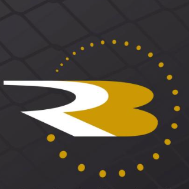

Provider Settings
Choose which sports and market types each connector collects.
| Sport 1 | Saba | Sbobet | Pinnacle | Flashscore | Sofascore |  RunningBall | BetGenius |
|---|---|---|---|---|---|---|---|
| Soccer | ON 3 | ON | ON | ON | N/A 2 | N/A | N/A |
| Basketball | ON | ON | ON | ON | N/A | N/A | N/A |
| Tennis | ON | ON | ON | ON | N/A | N/A | N/A |
| Ice Hockey | OFF | ON | ON | OFF | N/A | N/A | N/A |
| Baseball | ON | ON | ON | ON | N/A | N/A | N/A |
| Cricket | ON | ON | — | ON | N/A | N/A | N/A |
| Table Tennis | ON | ON | ON | — | N/A | N/A | N/A |
| League of Legends | ON | ON | ON | — | N/A | N/A | N/A |
| Dota 2 | ON | ON | ON | — | N/A | N/A | N/A |
9 sports shownChanges are saved immediately
Providers that cannot filter market types are not listed. 4
| Provider | Market Types | Last change 5 |
|---|---|---|
| Saba | HandicapOver / Under1X2MoneylineOdd / EvenCorner Handicap | 2026-11-07 17:29 · ops.user |
| Sbobet | HandicapOver / UnderCorner Handicap | 2026-11-07 17:29 · ops.user |